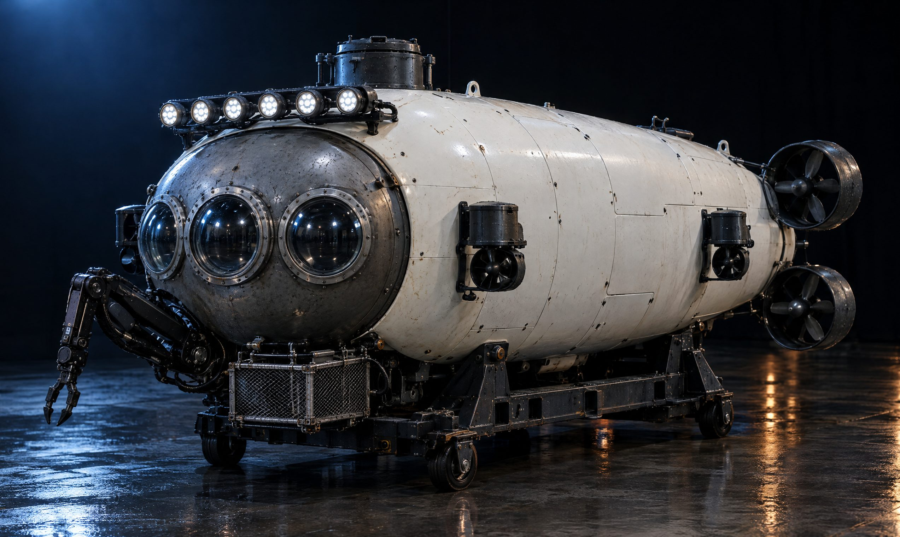
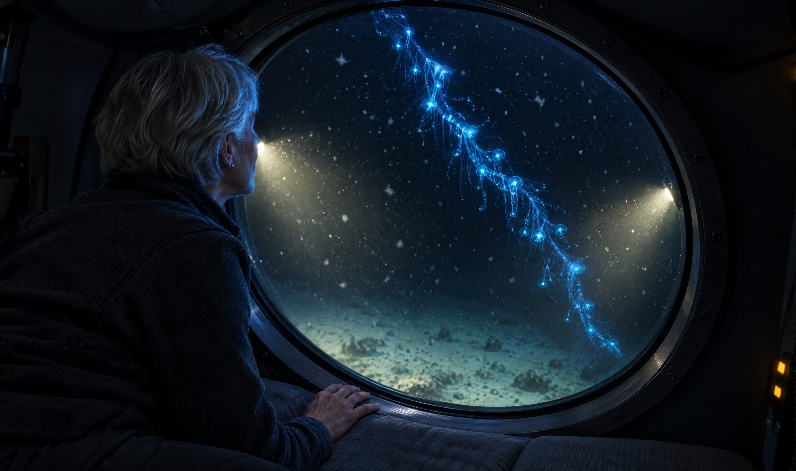
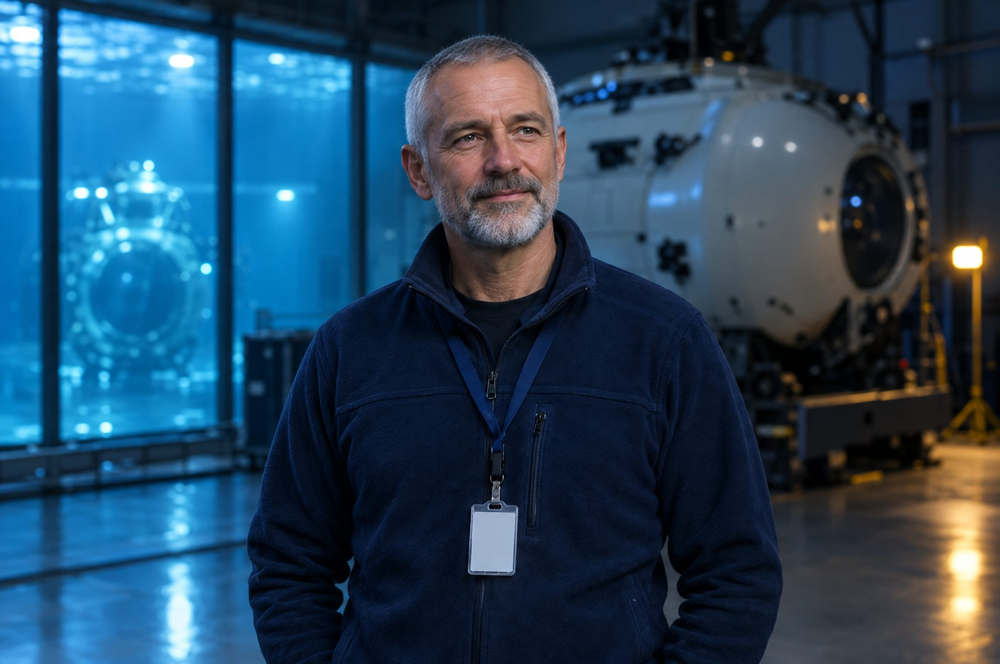

The deep begins two hundred metres down.
APHOTIC carries two guests and a pilot past that mark in one sphere. Five hours in the twilight, a day on the abyssal plain, or eleven hours to the trench floor and back.
The hook lets go, then a stillness nobody predicts.
Fourteen tonnes settle off the crane in one motion. The swell stays outside. Inside you notice the hull ticking, your own breath, and the pilot calling out the vent checks.
One minute down, the brightest stretch of the ride.
Sunlight still reaches you in long pale shafts, 6 bar against the viewport. It glitters for a minute, then thins as the red drains out of it.
The blue fades and slides into indigo.
Out there the light is a hundredth of what you squinted at on deck. Nobody has named this particular shade yet. Most divers attempt one regardless.
We dived one hundred and forty-two times before a guest came aboard.
Every figure below is checked each quarter by the Isander Marine Safety Board and published in full, including the dives we would sooner forget. As of 21 September 2026.
Uncrewed test dives before our first guest
Crewed dives made since March 2023
Guests carried past the twilight line
Injuries among crew or guests. We plan to hold that at zero
Dives past 9,000 metres in VIGIL, our first sphere
Time from a release call to the drop weights falling clear
EMERGENCY ASCENT
Three separate ballast releases, live from the hook through to the floor.
SEA-STATE HOLDS, 2026
11 of 23 windows held. We wait on the swell, never the calendar.
SPHERE PROOF MARGIN
24% above our deepest dive, tested in a chamber, not modelled.
Sparks, at eleven o'clock in the morning.
They show up before you register that the light is gone. Blue flashes in the black: brief, sharp, and far more of them than feels plausible.
Beyond here, a plant has no light left to grow by.
Everything past this point lives on what falls, or on what it hunts. There is no wall, no jolt to mark it. The pilot reads the number once, low, and the sphere quiets.
SALTMARROW fades out above. You carry on down.
The ship's deck lights shrink to a smudge overhead and are gone a minute later. Thrusters cut out. The hull goes quiet. The viewport belongs to you now.
Three ways under the
line.
Three seats, three viewports, and one instruction: let them see.
VIGIL is a submersible designed outward from the viewport. Our engineers got the acrylic first, then had to build a sphere around it. It rides SALTMARROW, a support ship that launches it from the stern twice a week.

Nothing down here has ever seen the sun. It makes its own light.
At 101 bar, every light outside the viewport was made by something alive: to hunt, to hide, to find a mate. It looks and feels like a night sky. It is precisely the reverse.
In the floodlights it snows upward, all the way down.
Flakes of everything that ever lived above you drift past the glass. Siphonophores trail by like strings of blue lamps. Nobody dozes through their first hour in the dark.
Four hundred bar. The floor comes up to meet you.
A pale rim in the floodlights, then ooze, tracks and a sea cucumber in no hurry at all. Plain guests spend five hours here. Most stop checking the clock inside one.

We built the sphere around the viewport, then the viewport around you.
Moulded to your frame.
Your kneeling cushion comes from a scan taken on your first day of training. It holds you at the glass for hours and travels home with you after.
Cast acrylic, 18 centimetres thick.
A single cone, seated tighter the deeper you go, close enough to your face that the frame drops out of view. Every guest gets their own.
Dim enough to see by.
Cabin lighting falls to 2 lux below the twilight line, warm and low near the floor, so your eyes adjust to both the floodlights and the sparks beyond them.
Sea-level, at 16°C.
Sea-level pressure, 40% humidity, scrubbed and cycled every ninety seconds. Sable stocks ninety-six hours of it for an eleven-hour dive.
Six days to turn into
crew.
Plain guests train for six days at Port Tamsin. Dusk uses only three of them, and Sable adds fifteen more spread across two months. You leave able to handle everything in the sphere you will almost certainly never need.

Past the rim of the plain, the floor simply falls away.
Sable drops off the edge at 50 metres a minute. Within the hour, the plain you thought was the bottom is a ledge somewhere far above you.
Six kilometres down, the trench walls close in on both sides.
You watch rock faces slide upward, pale amphipods swarm the lights, a snailfish hang still in the beam. Fewer than forty people have been down this trench.
Between the walls, the phone falls silent for thirty-eight minutes.
No ship, no surface crew on the line. Only the trench wall sliding past a few metres off the glass, rock fewer than forty people have ever seen with their own eyes.
Then it settles.
The skids touch pale ooze, in complete silence. Then a voice from SALTMARROW, delayed six seconds through the water, asking how the view looks.
RESERVE SABLE